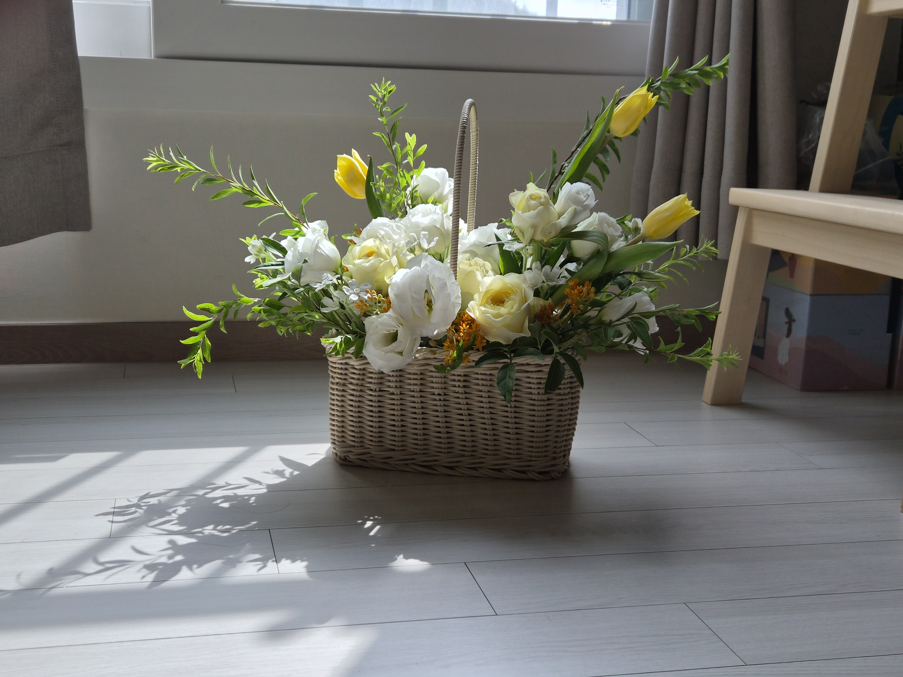
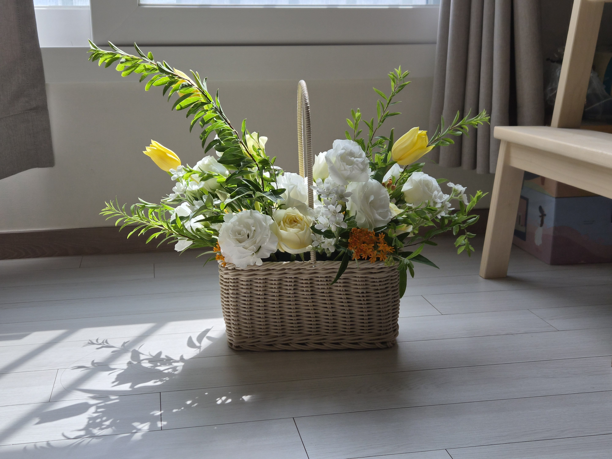
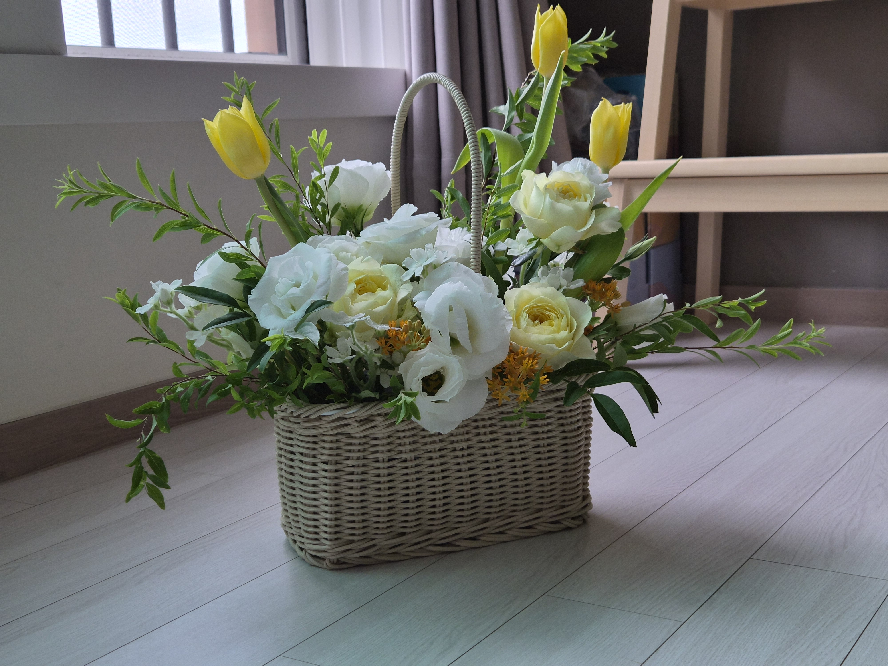

SELF-DIRECTED · BASKET ARRANGEMENT
2026.09.11
Warm Classic
Garden Basket
初秋のやわらかな庭
01 / SELF-DIRECTED
CONCEPT
Warm light in an
early-autumn garden.
아버지의 생신 선물을 위해 제작한 사방형 플라워 바스켓입니다. 화이트와 버터 옐로우를 중심으로 오렌지 포인트를 더해, 밝고 따뜻한 초가을 정원의 분위기를 표현했습니다.
한 방향의 정면형보다 여러 방향에서 자연스럽게 읽히는 구성을 목표로 했고, 바스켓 손잡이는 완전히 숨기지 않고 디자인의 일부로 남겼습니다. 꽃의 볼륨과 선 소재의 움직임이 함께 보이도록 높낮이와 방향을 조절했습니다.
父の誕生日のために制作した、四方から楽しめるバスケットアレンジです。 白とバターイエローを基調に、オレンジをアクセントとして加え、 初秋のやわらかな光を思わせるあたたかな雰囲気を目指しました。
COLOR PALETTE
色の構成
Soft whites,
butter yellow,
warm orange.
화이트와 크림 계열을 베이스로 두고, 버터 옐로우를 주요 포인트로 사용했습니다. 오렌지는 작은 면적으로 넣어 전체 팔레트에 온기를 더하고, 그린은 꽃 사이를 연결하는 자연스러운 배경색으로 활용했습니다.
ここに日本語の色構成についての説明を入力します。 ベースカラー、アクセントカラー、グリーンの役割などをまとめます。
IVORY
#F3EFE3SOFT WHITE
#E9E6DDBUTTER YELLOW
#DDBF52WARM ORANGE
#C9782FLEAF GREEN
#667352MATERIALS
使用花材
큰 꽃의 볼륨과 가벼운 소화류, 바깥으로 뻗는 선 소재를 함께 사용해 풍성함과 자연스러운 움직임이 동시에 보이도록 구성했습니다.
大輪・中輪の花を中心に、軽やかな小花と枝ものを組み合わせています。 花のボリュームだけでなく、枝や葉の線が外側へ伸びることで、 自然な動きと余白が生まれるように花材を選びました。
브리스리스 장미
バラ（ブリスレス）
튤립(옐로우)
黄チューリップ
리시안셔스(화이트)
白トルコキキョウ
옥시페탈룸(화이트)
白オキシペタルム
튜베로사
アスクレピアス
영춘화
オウバイ
잎설유
スピレア（葉物）
White · Butter Yellow
Orange · Green
白と淡い黄を中心に、
オレンジとグリーンをアクセントに。
COMPOSITION
構成とバランス
FORM,
LINE,
BALANCE.
장미와 튤립의 큰 볼륨을 중심으로 두고, 리시안셔스와 소화류가 사이 공간을 연결하도록 구성했습니다.
영춘화와 잎설유는 바스켓 외곽으로 뻗어나가는 선을 만들어 완성된 형태가 지나치게 둥글고 정적인 인상으로 보이지 않도록 했습니다.
작업 중에는 바스켓을 계속 회전시키며 앞뒤와 측면을 함께 확인했고, 손잡이가 꽃에 완전히 묻히지 않도록 전체 높이와 밀도를 조절했습니다.
バラとチューリップのボリュームを中心に置き、 トルコキキョウや小花で花同士の間をつなぎました。 枝ものは外側へ伸ばし、丸くまとまりすぎないように線の動きを加えています。 制作中はバスケットを回しながら、前後左右のバランスと 持ち手の見え方を確認しました。
FINAL VIEW
完成したかたち


바스켓의 손잡이와 외곽선이 함께 읽히도록 완성된 전체 형태를 기록했습니다. 풍성한 밀도를 유지하면서도 선 소재 주변에는 약간의 여백이 남도록 구성했습니다.
完成した全体のフォルムでは、バスケットの持ち手と 花材の外側のラインが同時に見えることを大切にしました。 密度を保ちながらも、花と花の間に呼吸できる余白が残るようにしています。
REFLECTION
制作を振り返って
Fullness
without losing
breathing room.
이전 자율작보다 앞면과 뒷면의 균형을 더 의식하며 제작했고, 바스켓을 여러 방향에서 확인하는 과정이 한층 자연스러워졌습니다. 색의 연결과 전체적인 분위기는 의도한 방향에 가깝게 완성되었습니다.
다음 작업에서는 큰 꽃과 작은 필러 사이를 이어주는 중간 볼륨을 조금 더 충분히 확보하고, 외곽의 그린 라인과 바스켓 림 주변의 마감까지 더욱 세밀하게 정리하는 것을 목표로 합니다.
前後のバランスを意識しながら、複数の方向から形を確認する工程が 以前より自然にできるようになりました。 色のつながりと全体の空気感は、意図したイメージに近づけることができました。 今後は、大きな花とフィラーの間をつなぐ中間のボリュームと、 グリーンのラインやバスケットの縁まわりの仕上げを さらに丁寧に整えていきたいです。
풍성해 보이면서도 답답하지 않은 밀도와, 보다 정교한 외곽선 정리.